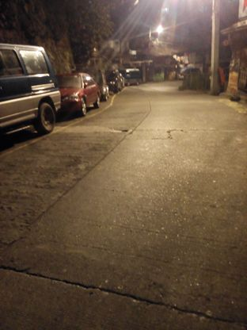
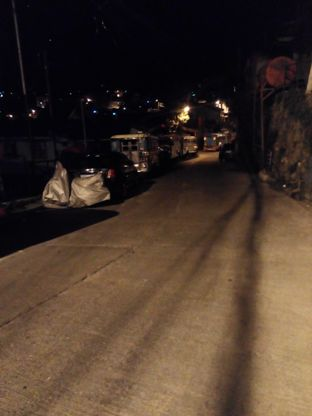
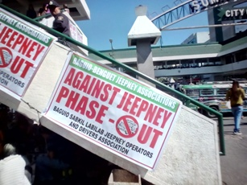
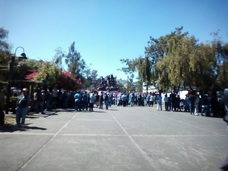
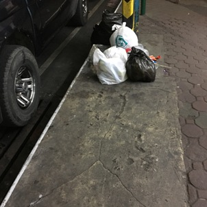
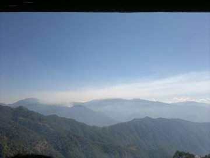
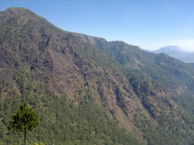

Cooperation is the Key
by Paul Reynon
I was raised to avoid being involved in street fights or anything related to violence and deviant acts. Somehow, I managed to avoid it and stayed safe. Being safe is a good feeling. No wounds to worry about.
I am an ordinary citizen of my community. I would say that I am short and I don't have a muscular body to defend me from danger. Despite being skinny, I always love to take a trip around my community through walking — and by doing so, I can't avoid passing through dark passageways. Dark passageways for me are full of evil schemes. Schemes of a holdup, snatching, and even murder. In other words, dark passageways are the breeding ground for deviant acts that ruin the peacefulness of a community.
 (Citizens being as one by abiding to the traffic lights; Image by: Paul)
(Citizens being as one by abiding to the traffic lights; Image by: Paul)
However, based on my experiences, I always passed through dark passageways safe and sound. It only suggests that the community I belong to is a peaceful one. Only then that I realized that walking through dark passageways in the middle of the night without worrying my safety is possible. Everyone will surely benefit from a peaceful community so everyone should work together and strive to maintain peace. Cooperation is an essential key to unlocking the door towards peace and order.
Increasing the Safety
by Michael Rivera

(A well-lit street in Baguio City; Image by: Michael)
People in Baguio like to walk to their destinations. To run errands, go to school, go home, exercise and other stuff because almost everything is walking distance considering there are many streets and alleys you can walk through to arrive where you want to go, and we believe that people should be safe when walking through these so-called streets and alleys.
This is to increase the awareness of people — most especially students who take unsafe-looking streets and alleys to go home. One concerning matter involves a 16-year-old high school student who passed away on an alley along Labsan St. after being stabbed 40 times last December which is even near a public high school.

(Another well-lit street; Image by: Michael)
Narrow alleys tend to tempt bad people so that they could commit crimes. This does not only aimed at the area where the incident took place but all streets and alleys should be well lit and safe to pass through.
We citizens should help the authorities by reporting any crimes committed within areas we usually go to. Along with that, any suspicious-looking persons should be avoided just to make sure that the possibility of danger is less. We need to increase awareness about matters like these to other people. With this initiative, we will be able to improve safety and generate better experience for everyone because safer streets mean safer people.
Keeping it Alive
by Patricia Canaria
Most news all over the Philippines today are about the "OplanTokhang" project. This is an anti-drug campaign against the illegal use and distribution of drugs. Police officers capture all the possible illegal drug users and dealers in the entire archipelago. During President Duterte’sinaguration, he urged the people to kill suspected criminals and drug addicts. He also orders police to adopt a shoot-to-kill policy.
Since the project began, crime rates decreased but a numerous number of drug-related killings were recorded. Many suspects were killed during police operations regarding the OplanTokhang project. There were also reports that there are vigilantes who kill suspects in the night and even in a broad daylight. Many claims that some of the killed suspects are innocent people. How can the innocent people receive justice if the man should be blamed is the one who implements justice?
 (Authories seek to stop drug users; Image by: Patricia)
(Authories seek to stop drug users; Image by: Patricia)
Peace and order are the two things that the government wants to achieve when they implemented the project. But how can we live in peace and harmony if the person that should be protecting us is becoming a threat to our safety? Can we trust them? Are we really safe?
That question is yet to be answered — but all we know is their purpose, that everything being done is to keep us safe. We should stay faithful, and thankful that these people are trying their best to make this archipelago a better place. Valuing the purpose is an important aspect.
Discipline is the Heart of Order
by Jimuel Catalan

(A tarpaulin going against phasing out of jeepneys; Image by: Jimuel)
Last January 21, 2017, Jeepney drivers talked their hearts out about the phasing out of jeepneys that are 15 years or older. They strongly believed that phasing out jeepneys will be bad not only for their families but also to the masses who commutes using them.

(Jeepney drivers protest against phase-out; Image by: Jimuel)
One thing that was observable, though, is that they did it in a systematic and a peaceful process which is very commendable. No one expressed personal anger, just plain and open-minded opinions.
Peace and Order can really be achieved if we follow a system which lets us open up and express our ideas as individuals. We should learn from those people that no matter how difficult a situation may be, we should calmly face it and deal with it.
Fighting together
by Paul Reynon
People say that the children are the show window of the family. In other words, the behavior of the children resembles the parent's way of guiding their children. The same is true with the peace and order of a community. The peacefulness and orderliness of a community reflect its people. It reflects how good and disciplined the people are.
Issues regarding peace have been the hottest topic of the past year since the change of administration. With the extrajudicial killings being the central topic of every news network in the Philippines, Filipinos are left in jeopardy. The said killings were linked to drug-related activities. The president believes that drugs are the root cause of everything bad so he promised to focus his first months of his term on removing drugs in our country.

(Garbages not being thrown to a proper place which implicitly says how undisciplined the people are; Image by: Paul)
Attaining peace and order can be considered as the dream of every leader of a community. Policies and ordinances are being passed by the congress to ensure and keep the peace and order. These, however, are just a piece of paper without the proper enactment and cooperation of the people.
 (Garbages being placed improperly; Image by: Paul)
(Garbages being placed improperly; Image by: Paul)
Our behavior plays a vital role in attaining peace and order. Being responsible, disciplined, and virtuous will qualify us to become law-abiding citizens. Our leader cannot attain peace and order alone. We, citizens, should join and work with the leader by abiding the laws which in turn will bring us safety. We need to unite and raise awareness to other people. We are the people of this community. We are the ones who will benefit from it. The peace and order of our community are the show window of us. Let's promote peace and order for us to paint a better picture of us. Act now and make a change.
Exploring the World
by Dominik De Leon
(Philippine beaches; Source: philippinetravelpackages.com)
A person isn’t really who they are when they are just stuck in a single place. Travelling is the best feeling that a person can ever have. Traveling takes you to places far away from your reality. It takes you to a new world where you can become another great person. Having that peace of minds sets you apart from the others. It makes you a better person for the reason that their lives are being driven by anger that puts them in situations that would destroy them in the future. Yet you have these positive outcomes when you travel and puts your mind at peace.

(Mountainous areas may be an intriguing option too; Image by Dominik)
3 Simple Effects of Traveling
- Traveling lets you have more knowledge about other culture of people from different places, how they live their everyday lives, how they solve their own problems and maybe it lets you realize that what takes you away from peace is nothing compared to what they have.
- Travel as much as you can. Those journeys that you have taken adds another reason for you to have a peace of mind. When you at your worst, you can imagine those calm waves of the beach, those soft sands, the leaves of the palm trees swaying in the wind and that puts you in a state of calm and steady mind. Which helps you think clearly
- Traveling sets your patience longer than those people who don’t travel. Because it trains you in the process of waiting. However, you won't be able to realize it right away because you are more focused in the greater reward of traveling — the happiness that you can get from other places.

(Sight-seeing is a good way to relax; Image by Dominik)
To achieve piece we must also keep ourselves busy, being a good citizen of a country is one way, but training ourselves to appreciate the beauty of the world will set our minds free.